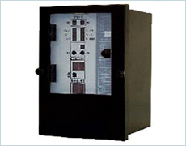

キュービクル内蔵メカ型、静止型リレーのリプレースに6kVキュービクル活用型デジタルリレー
本継電器はマイクロコンピュータを用いた高性能な電力系統用ディジタル形保護継電器であり、主に6.6kV配電線キュービクルのリプレース用に開発した継電器です。短絡保護、地絡保護要素を内蔵し、非常にコンパクトです。
| ディジタル過電流保護リレー | |
|---|---|
| 型式 | CUP - C1T |
| 保護回線数 | 1回線 |
| 系統周波数 | 定格 60Hz |
| 制御電圧 | 定格 DC110V |
| 消費電力 | 20W以下（平常時 約3W以下） |
| 電圧変動範囲 | 88〜143V |
| 本体寸法 | W 143mm×H 194mm×D 132.7mm |
ご相談は制御機器事業部 Tel. 06-6387-1184